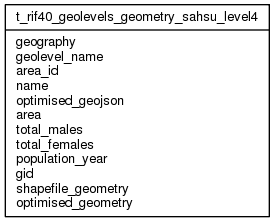

| Table: rif40.t_rif40_geolevels_geometry_sahsu_level4 | |||
| Geolevels geometry: geometry for hierarchy of level with a geography. Use this table for INSERT/UPDATE/DELETE; use RIF40_GEOLEVELS for SELECT. In RIF40_GEOLEVELS if the user has the RIF_STUDENT role the geolevels are restricted to LADUA/DISTRICT level resolution or lower. This table contains no data on Oracle. This replaces the shapefiles used in previous RIF releases. Populating this table checks the lookup and hierarchy tables and thus it must be populated last. Any insert into T_RIF40_GEOLEVELS_GEOMETRY must be a single statement insert. This is the partition for geogrpahy: sahsu, geo level: level4 | |||
| Size: medium, Select frequency: medium, Update frequency: medium | |||
| Columns | |||
| Name | Type | Constraints | Description |
| geography | VARCHAR (50) | NOT NULL | Geography (e.g EW2001) |
| geolevel_name | VARCHAR (30) | NOT NULL | Name of geolevel. This will be a column name in the numerator/denominator tables |
| area_id | VARCHAR (300) | NOT NULL | An area id, the value of a geolevel; i.e. the value of the column T_RIF40_GEOLEVELS.GEOLEVEL_NAME in table T_RIF40_GEOLEVELS.LOOKUP_TABLE |
| name | VARCHAR (300) | NOT NULL | The name of an area id |
| optimised_geojson | VARCHAR (2147483647) | NOT NULL | Shapefile multipolygon in optimised GeoJSON format. RIF40_GEOGRAPHIES.MAX_GEOJSON_DIGITS determines the number of digits in the GeoJSON output and RIF40_GEOLEVELS.ST_SIMPLIFY_TOLERANCE determines the minimum distance (in metres for most projections) between simplified points. Will contain small slivers and overlaps due to limitation in the Douglas-Peucker algorithm (it works on an object by object basis; the edge between two areas will therefore be processed independently and not necessarily in the same manner). This can be` fixed using the PostGIS Topology extension and processing as edges. See also TOPO_OPTIMISED_GEOJSON; i.e. GeoJson optimised using ST_ChangeEdgeGeometry() and ST_Simplify(). |
| area | NUMERIC (12, 2) | NOT NULL | The area in square km of an area id |
| total_males | NUMERIC (12, 2) | Total males. | |
| total_females | NUMERIC (12, 2) | Total females. | |
| population_year | NUMERIC (12, 2) | Population year. | |
| gid | INTEGER | NOT NULL | Geographic ID (artificial primary key originally created by shp2pgsql, equals RIF40_GEOLEVELS.GEOLEVEL_ID after ST_Union() conversion to single multipolygon per AREA_ID) |
| shapefile_geometry | geometry (2147483647) | NOT NULL | Spatial data for geolevel (PostGress/PostGIS only). Can also use SHAPEFILE instead, |
| optimised_geometry | geometry (2147483647) | NOT NULL | Optimised spatial data for geolevel in SRID 4326 [WGS84] (PostGress/PostGIS only). Can also use SHAPEFILE instead. RIF40_GEOGRAPHIES.MAX_GEOJSON_DIGITS determines the number of digits in the GeoJSON output and RIF40_GEOLEVELS.ST_SIMPLIFY_TOLERANCE determines the minimum distance (in metres for most projections) between simplified points. Will contain small slivers and overlaps due to limitation in the Douglas-Peucker algorithm (it works onj an object by object basis; the edge between two areas will therefore be processed independently and not necessarily in the same manner. This is fixed using the PostGIS Topology extension and processing as edges. |
| Grants | |||
| Role | Actions | ||
| rif40 | select, references, insert, delete, update | ||
